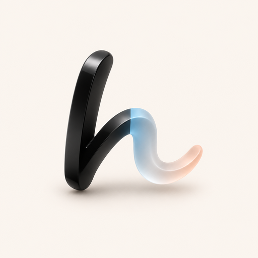
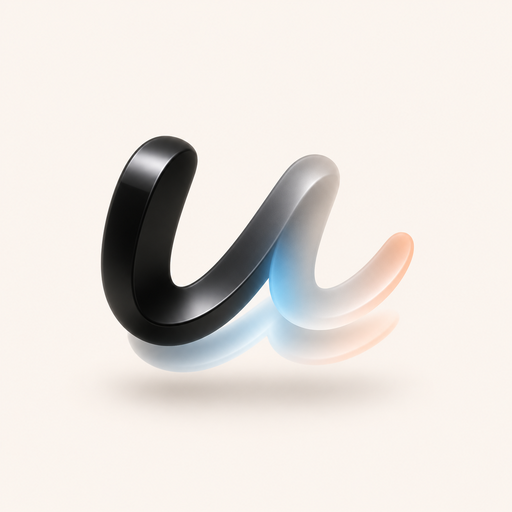
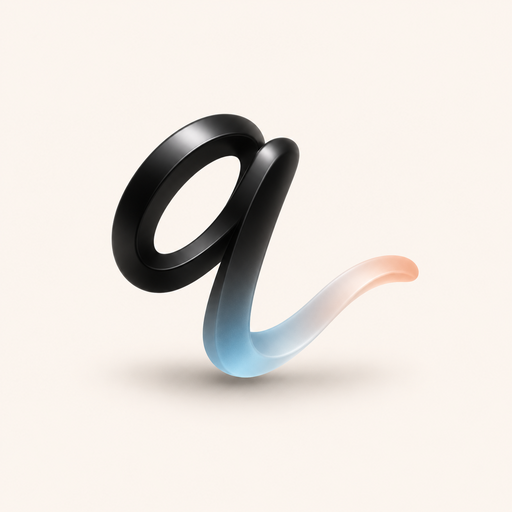
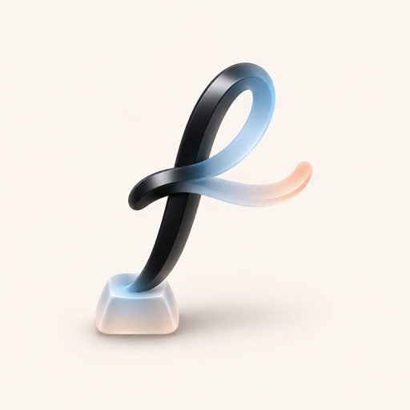
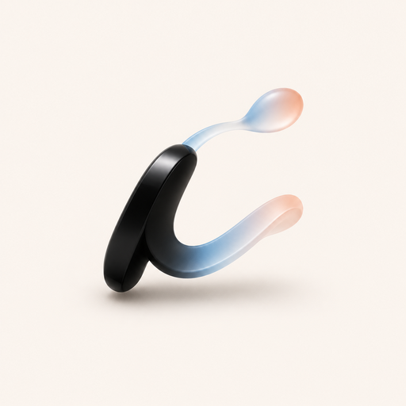
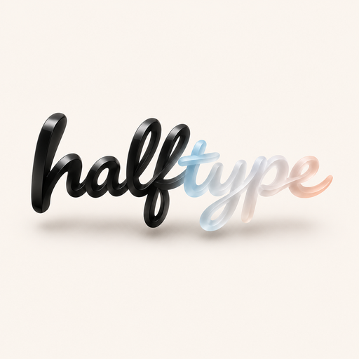

Itda logo, round 5: names
John: "Can we use the name typeless, or would there be a legal problem with that? If not, can I see some versions with that name in mind". Typeless is taken, so these are 4E, subtly coloured, for names that passed a first check.
Name check
| Name | .app domain | App Store | Web |
| Halftype | free | none | No product found. |
| Undertype | free | none | No product found. |
| Quietype | free | none | No product found. |
| Fewkeys | free | none | No product found. |
| Inkahead | free | none | No product found. |
| Typeless | - | - | Out: a Mac AI dictation app, USPTO application 99669312 (classes 9 and 42). |
| Prewrite | free | none | Out: an existing story-writing web app. |
| Lesstype, Aftertype | - | iOS apps | Out: both names already on the App Store. |
| Foretype, Pretype, Ghostkey, Tabwise, Ieum | taken | - | Out: the .app domain is taken, or apps already use the name. |
Every short .com is taken (parked), so plan on .app or get-<name>.com.
Icons (Codex's image tool, 4E as the reference)
5AHalftype: h

Half black ink, half glass, split right where the name says. The name is the picture, which none of the others manage. The strongest icon, and it reads at 32 px. Recommended.
5BUndertype: u

A black u with a glass u under it, the suggestion beneath your typing. Clever, but the double letter blurs to a smudge at 16 px.
5CQuietype: q

A calm q whose tail trails into glass. Pretty, but it reads as "a" or "9" at a glance.
5DFewkeys: f

A cursive f written from one glass keycap. It brings back 4C's key, but the f is thin and the key is tiny.
5EInkahead: i

An i whose dot has run ahead as a glass drop. A nice story, but it reads as a "c" or a tick.
5FHalftype, the whole word

The full name as a ribbon: "half" in ink, "type" in glass. It works as a wordmark for the website and About window, not as an icon: at 32 px it's a line.